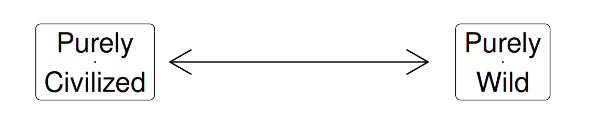
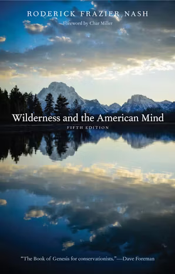
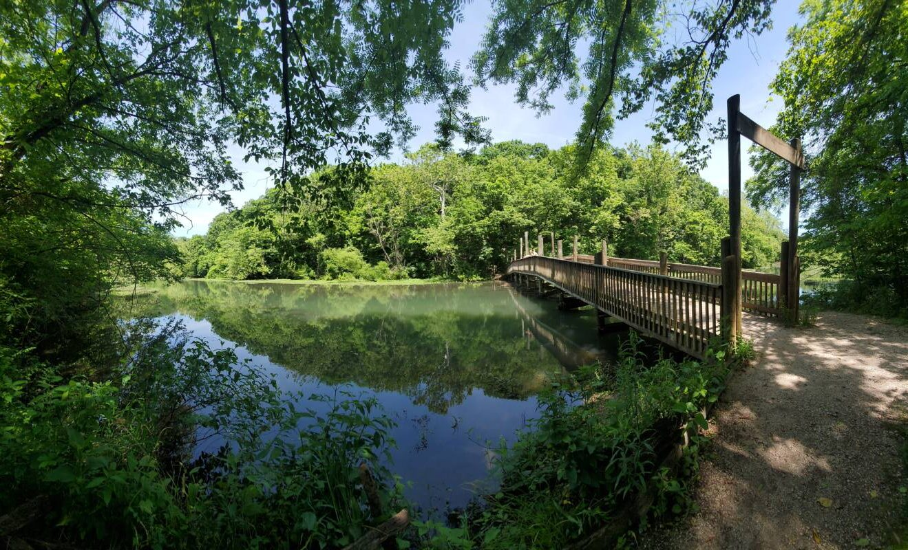
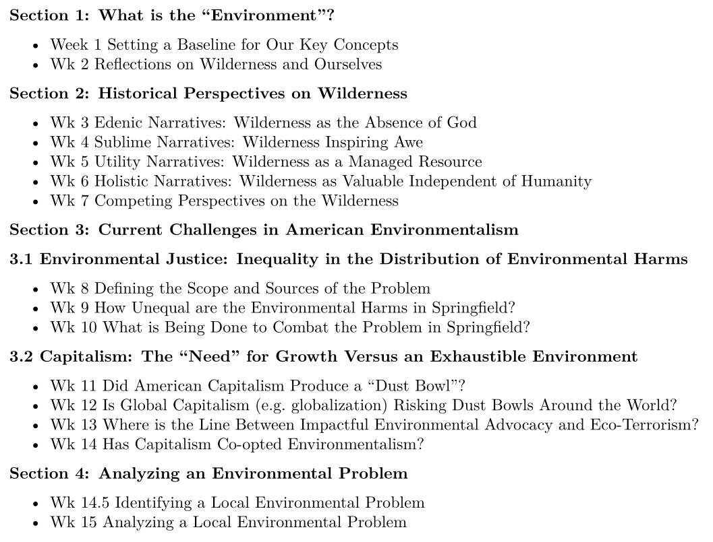

Today’s Agenda
Section 4: Analyzing an Environmental Problem
- Identifying Local Environmental Problems
Justin Leinaweaver (Fall 2026)
Course Evaluations (IDEA)
Reflections on Wilderness and Ourselves


A Spectrum of Environments
Section 2: Historical Perspectives on Wilderness
Edenic Narratives
Sublime Narratives
Utility Narratives
Holistic Narratives
The Environmental Justice Problem
Capitalism and the Drive for More
Course Outline

Paper 3: Analyzing a Current Environmental Problem
Make an argument that our community needs to address an important, local environmental problem.
Your argument must include the following THREE elements:
- Make clear the scope of the problem (e.g. who is being harmed and in what specific ways?)
- Make clear why this problem exists (e.g. how do the actions of individuals and/or groups create this problem?)
- Find us an example of a community anywhere in the world that has solved a problem like this, explain how they did it and what we can learn from their success.
Springfield Noble Hills Sanitary Landfill

Identifying Local Environmental Problems
What is the specific problem?
Why did you pick it?
Who is being harmed by it and in what specific ways?
Submit: Outline the Final Paper
Introduction
- What is the question you are answering?
- What is the problem you are targeting?
- Why is this an important problem?
Premise 1: Who is being harmed by the problem and in what specific ways?
Premise 2: Why does the problem exist? (e.g. whose actions are creating the problem?)
Premise 3: What is a relevant policy example that can help us solve the problem in our community?